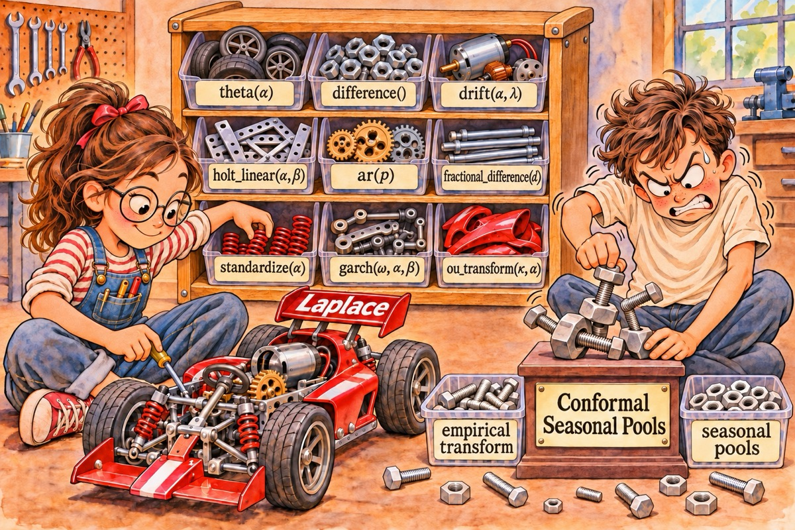

Refund policy
If skaters has disappointed you, you are entitled to a full refund
of everything you paid for it.
Calculating your refund
Refunds are processed instantly. In fact, yours has already been issued. Please check your account.
Complaint handling times
We measured how long each kind of feedback takes to change the package. The method is the same one we use for forecasts: score every case, then report the median.
| channel | median time to a fix | notes |
|---|---|---|
| Pull request with a failing test | hours | Our favourite. You will be thanked in the changelog. |
| GitHub issue with a reproducible example | a day or two | The route we hope everyone takes. |
| GitHub issue saying "it's slow" | a week | We will ask which series, which horizon and which machine. |
| Social media post, with emoji | ∞ | Not monitored by the issue tracker. Neither are horoscopes. |
| Social media post claiming a benchmark nobody can rerun | ∞ + 1 | Scored at the 95% Winkler level, it looks great. |
| Fifteen-minute Medium article, no issue filed | ∞ + 2 | Two documentation pages were written in response. Neither was needed by anyone who had read the first two. |
A worked example: 228 datasets
A recent
article ran laplace on 228 datasets and reported, with
pictures, that it forecast negative electricity demand, produced an
interval reaching 1035 on the Bitcoin hash rate, and was slow at
horizons of 96 and 336. All three are true. Here is what each one tells you.

Negative electricity demand. laplace forecasts
a distribution on the real line. It does not know that demand is positive,
because nothing in a stream of numbers says so. If you know it, you say it:
one log transform, and every quantile comes back positive. That is
recipe three on the examples page, and
it is how every transform in the package works. The author ran the model
on 2,460 windows of non-negative data and did not apply one. The
scope page now spells this out, under the
heading Prior knowledge, for readers who need it spelled out.
flesaker now applies the log
transform for you. It is experimental, in Python and JavaScript, and not
part of the official API. There are many possible domains, and skaters provides a clean
way to add your own custom conjugations. We lean towards making
flesaker permanent if people keep making YouTube videos
criticising the fact that an inanimate library doesn't know ahead of time
that a series will always be positive (but maybe you do).
Intervals at 1035. The hash rate was fed in as hashes per second, a number near 1020. Nobody who works with that series writes it that way; it is quoted in exahashes, where it is a number near 100. The package's transforms carry constants in absolute units, like every statistical package since the slide rule, and the scope page gives the working range. Dividing by 1018 before calling the function is the whole fix. It did not occur to the author to divide.
Slow at horizon 336. The documentation gives twelve steps as the upper limit and says longer horizons are ongoing work. The article ran it at 96 and estimated 336, then reported that it was slow and wrong there. It was. The 12 microseconds per observation that the article disputes is the Rust port, one step ahead, on a warm model, which is what the performance page says it is, next to the Python numbers the article prefers.
So: a real-line model run on positive data without the one-line fix, a
series fed in units a million million million times too large, and a
horizon outside the stated scope. The parts of the article that stay
inside the documentation are correct and are already on this site: at one
step ahead on M4 hourly, the author's method beats laplace on
144 series and loses on 19, and the
review says so in its
first table. The portfolio of the two beats both.
Take the advice of someone who is apparently new to time series but posing as an expert at your own risk. The signs, all from this one article:
- They run a model on data it was not built for (positive data on a real-line model) and report the result as a flaw in the model.
- They do not check units. A series quoted near 1020 instead of near 100 is a data-preparation error, not a forecasting result.
- They test outside the documented scope (horizon 336 against a stated limit of twelve) and present the failure as a finding.
- They dispute a published number by measuring something else: Python at long horizons against a figure stated for Rust, one step ahead.
- They review a competitor's package while promoting their own method, and the method is the one being compared.
It is really hard to make any package idiot-proof. We keep trying: the
scope page, the examples page and flesaker all exist because
of this article. The refund stands at $0.00.
Frequently heard
"It is slower than my method." Probably, especially if yours just computes the empirical distribution! Please open an issue with the script that timed both, so we can run it too. If yours wins, we will say so on the performance page.
"You didn't run my method properly." Very likely, as nobody reads a README the way its author does. The adapter is a few lines of Python. Send a PR that runs it properly and we will rerun the whole study with it.
"Your metric is unfair." Then tell us which one, and why. The metrics page explains ours, and every benchmark reports more than one. A metric chosen after seeing which one you win is not on the list.
"This package is garbage." This package is deployed for monitoring hundreds of thousands of economic time series, public and private. It was written because nothing else could be found that performs nearly as well. If you make basic errors trying to use it, or if CSP was the best you could muster until you studied Laplace, you are probably not the best person to judge.
How to get more than $0.00
- File an issue. Include the data, the code and the number you expected.
- Open a pull request. A failing test is worth more than a paragraph.
- Read the methodology first. It is long, but it is shorter than a thread arguing about it.
Contributors get their name in the acknowledgements. Complainers get their refund.